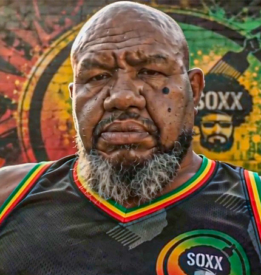
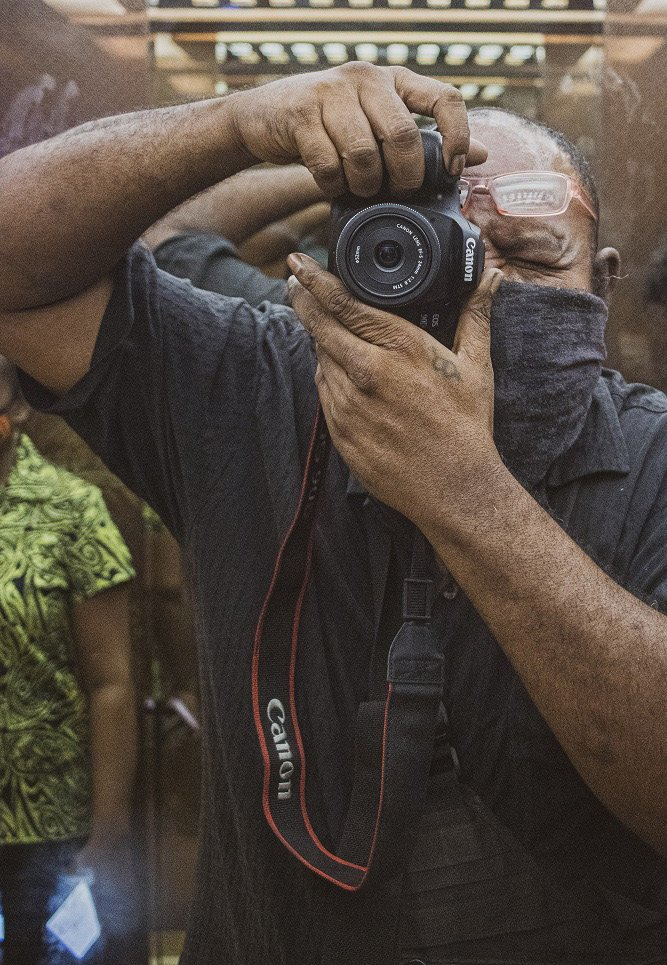

Kreative Savages Limited
Incorporated under the Companies Act 1997 of Papua New Guinea on 7 December 2015. Company No. 1-109091.
A progressive independent Digital Media production house whose enthusiasm, vision and creativity remains fresh and unique.
Background
Armed with a wealth of knowledge in digital technology, un-paralleled experience into the intricacies of Digital Media production, enhanced by the gift and ability for intuitive content creation and development; and having the capacity to balance skilled business affairs, indigenous cultural responsibilities and strong creative sensibilities — we do our thing successfully every time.
Founded in 2013, Kreative Savages produces independent Digital Media publications, and acts as a creative hub for marketing and branding strategies for the independent creative communities in Port Moresby, Papua New Guinea.
Ownership
A graduate Computer Scientist and self-styled, self-taught multimedia content creator who — through a passion for creative arts and information technology — has taught himself almost every commonly used multimedia skillset: graphics design, music production, video editing, and online marketing and sales.
Using his prowess in the Digital Media Production space, he is actively involved in "under-ground" digital music production in Port Moresby, teaching city youths how to produce music and music videos with the technology involved. Many of the youths he has worked with have gone on to develop disruptive creative multimedia skillsets not found in the "mainstream" multimedia industry of Papua New Guinea.
He actively volunteers his creativity to awareness programs and advocacies against marginalism.


Company
Incorporated under the Companies Act 1997 of Papua New Guinea on 7 December 2015. Company No. 1-109091.
Registered with the PNG Internal Revenue Commission. Taxpayer Identification Number (TIN) 500582736.
Operating from Port Moresby, National Capital District, Papua New Guinea — serving clients nationwide and beyond.